Наступил десятый день нашего пребывания в Стамбуле. Непосещёнными оставались ещё несколько ключевых достопримечательностей, но мы уже стали задумываться о расширении наших интересов. Показателен был один случай. Друзья, ещё в России, подарили нашей дочке резинового пупса. Мы взяли его с собой в поездку, но дня 3 назад он куда-то исчез. Дело нехитрое — выпал, вероятно, из коляски. Забавно другое — по дороге на паром, сегодня мы увидели в полукилометре от гостиницы кошку в коробке. Кроме кошки в коробке был ещё и наш пупс. Да, точно наш. Круг замкнулся.
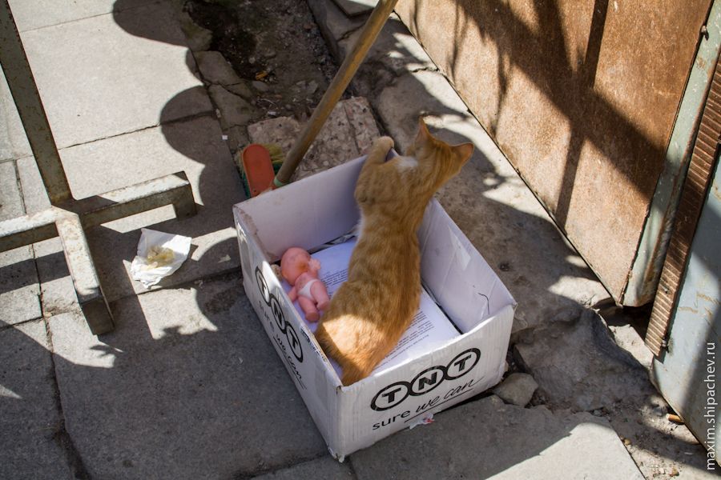
Итак, накануне вечером в гостинице я просматривал интернет-сайты с отзывами туристов о пляжах вблизи Стамбула и наткнулся на информацию о городе Шиле. Автор отзыва что-то писал о чистом пляже и уютном городке. От Стамбула до Шиле — 70 километров. Описание маршрута выглядело так: плывите в азиатскую часть, там найдёте автовокзал, садитесь на автобус, поезжайте. В общем, мы решили так и поступить.
С утра, правда, решили отправить открытки с чужбины, тем кто их не ждал. Открытки не ждали друзья с бульвара Строителей и @redhummer, проживающий по совпадению там же.
Купили открытки рядом с почтамтом, а вот с самим почтамтом совладать в первого захода не получилось. Вполне себе привычные для жителя России очереди. Мы решили, что время ещё есть (ошиблись).
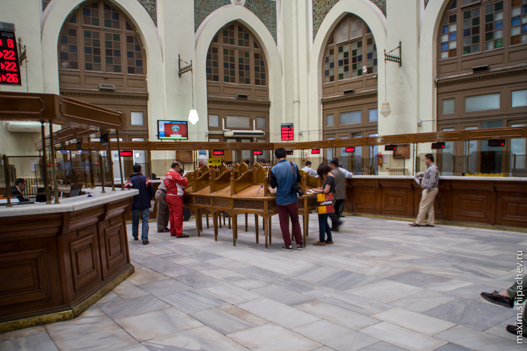
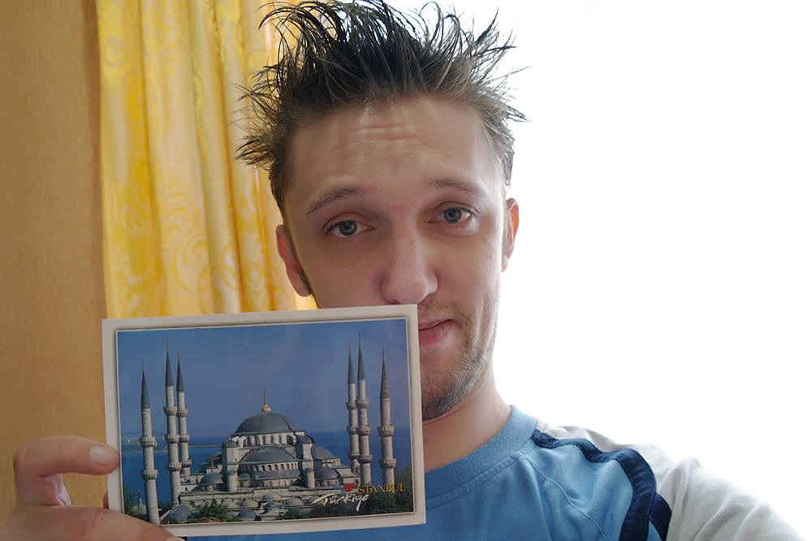
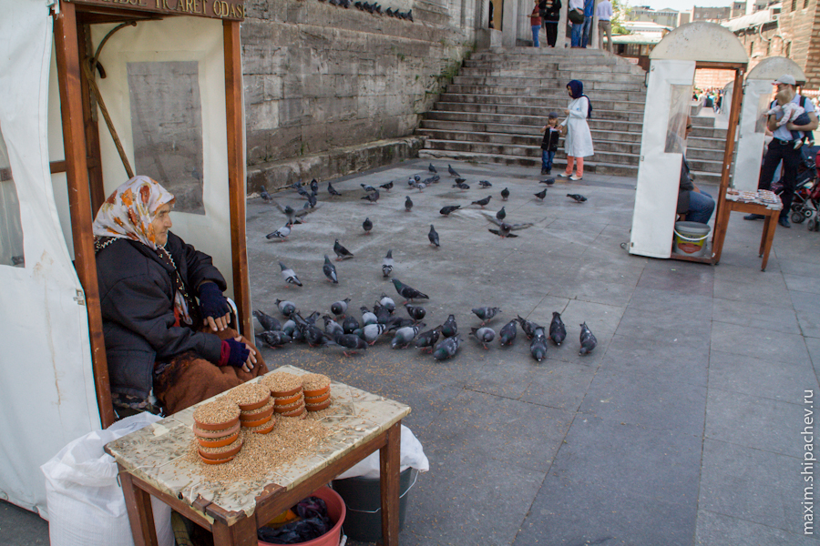
Спускаемся к привычной пристани Эминёню, садимся на паром. Плывём в Азию. Конкретно в район Стамбула Ускюдар.
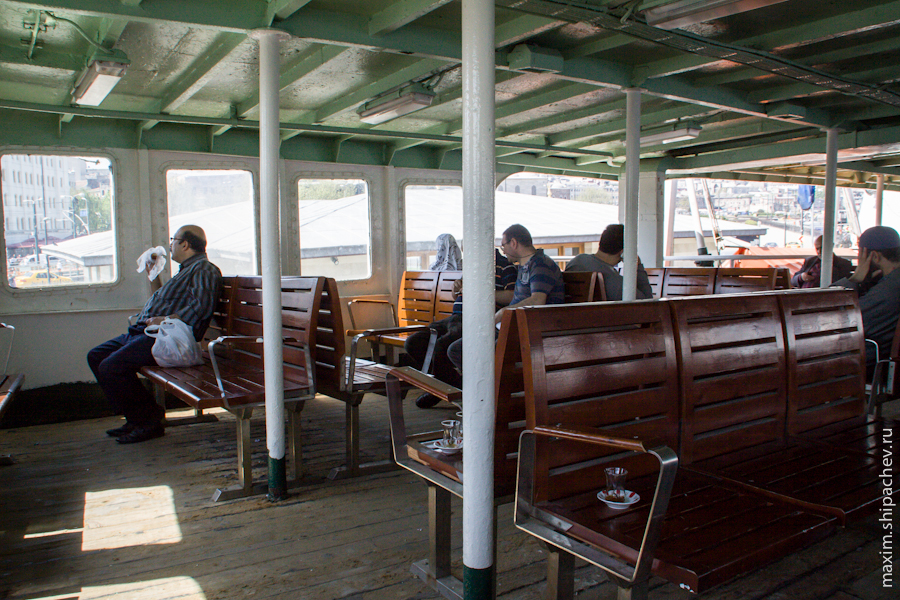
О людях, которые не понимали наш английский чуть ниже 
В Ускюдаре, разумеется рядом с пристанью не стояло никакого автобуса с надписью SHILE FOR RUSSO TURISTO. Захожу в специальный киоск с туристической информацией. Внешне всё выглядит так, как будто мне там должны помочь. И правда, в ответ на мой английский с ижморским акцентом, объясняют, что нужно пройти 50 метров туда, там будет стоять автобус. Идём, дожидаемся автобус. Тут меня начинают терзать смутные сомнения. Ничего похожего на Shile на аншлаге автобуса нет. Спрашиваю у водителя автобуса «Can we go to Shile on this bus?». Водитель автобуса типа Кемерово-Топки отвечает мне, что вообще-то он никуда не едет, потому что автобус сломался и он поедет в гараж, но в любом случае этот маршрут идёт не в Шиле, чтобы добраться до Шиле нужно пойти на другую автостанцию, метрах в двухстах от этой и там будет совсем другой автобус. Говорит нам на английском водитель автобуса типа Кемерово-Топки. Прислушиваемся к совету водителя, находим автостанцию, платим по 9 лир за билет, садимся в автобус вроде нашего НефАЗа.
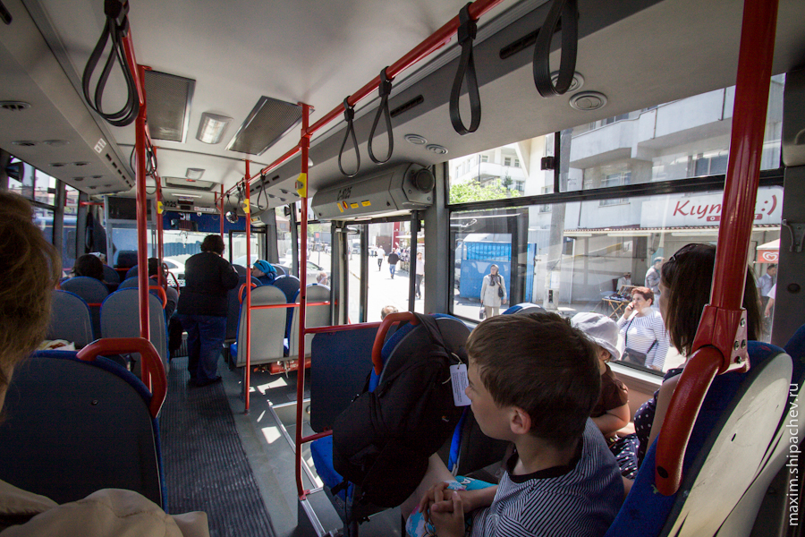
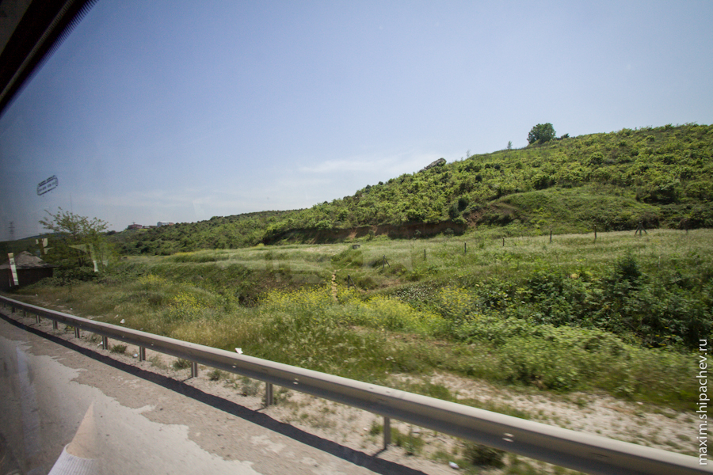
Спустя примерно 1 час 40 минут мы добираемся до места. Милая турецкая деревня с обилием гостиниц дешевле, чем в самом Стамбуле с видом на море. Мы даже подумываем здесь остаться на ночь, но все вещи остались в городе, поэтому решаем, до пляжа и обратно.
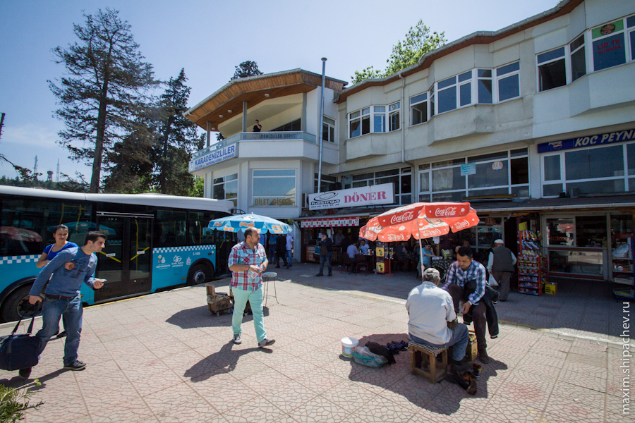
После непродолжительной поездки желательно подкрепиться. Заходим в первое попавшееся кафе. М-м-м, да тут готовят пиццу прямо при клиенте. Спрашиваю «Can I buy pizza without lamb?». Мы не очень-то к баранине, поэтому такой вопрос. Как будто стенке сказал. Повторяю пару раз, стараясь концентрироваться на произношении. Ноль реакции. Начинают что-то говорить на своём, показывают друг на друга и холодильник. Начинаю перечислять подходящие ингредиенты. Chicken, eggs, chees… Не клеится диалог. В итоге пиццу получается начать печь только когда я достаю из холодильника что нужно и отдаю пекарю.
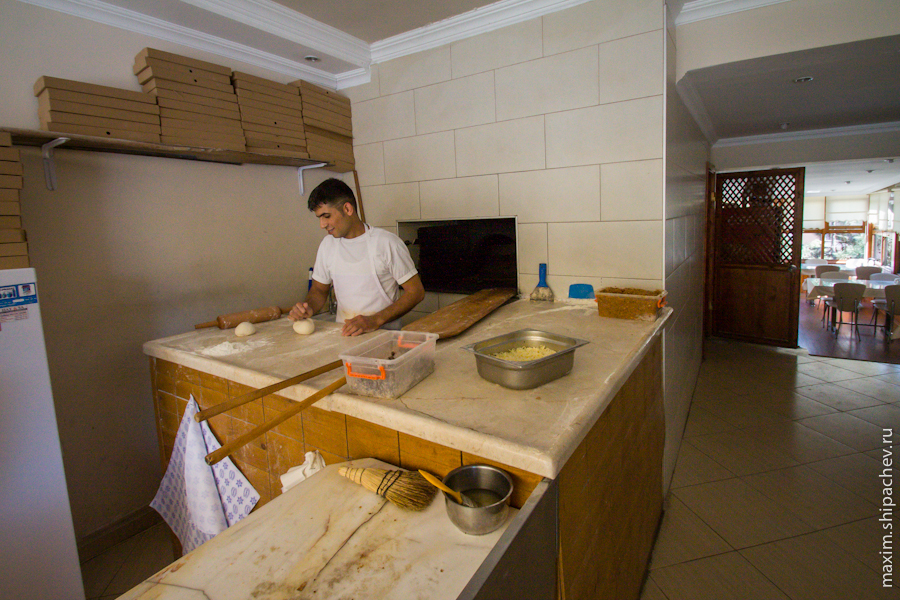
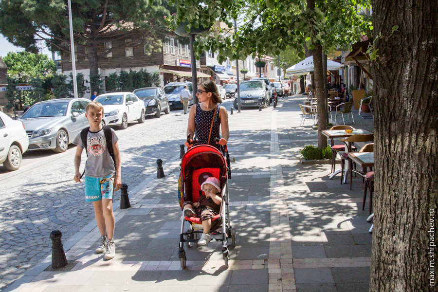
Останавливаемся и начинаем фотографировать на всевозможные фотоаппараты, телефоны и утюги. Вид чудесен.
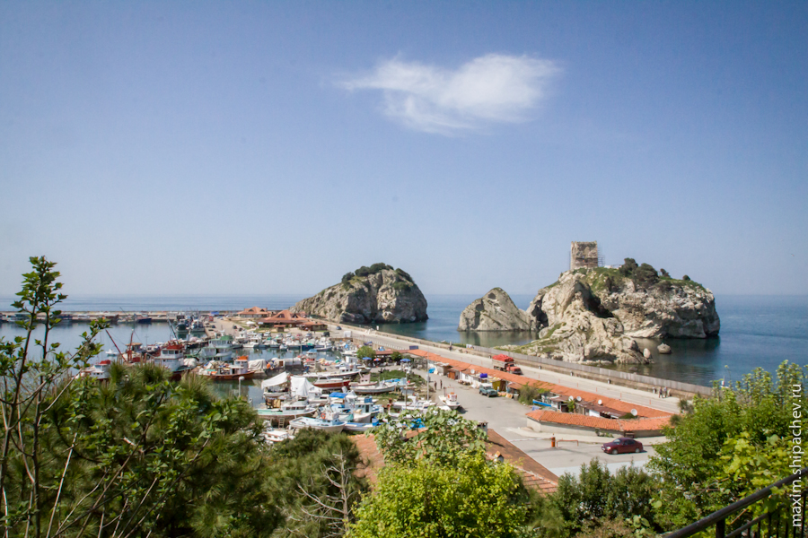
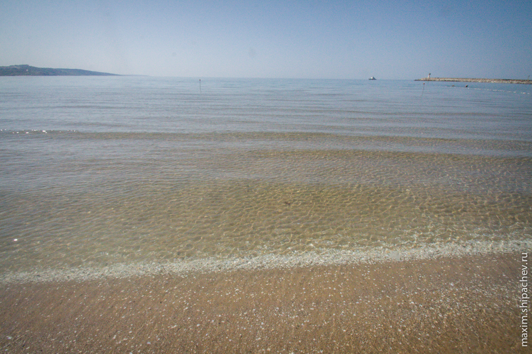
Для купания, конечно, ещё не сезон. Вода, думаю, градусов 17, хотя прямо у берега чуть теплее. Народу на берегу, мягко говоря, немного, что не мешает сдавать в аренду лежаки по 20 лир (около 900 рублей). Лежак не берём, остаёмся под палящим солнцем.
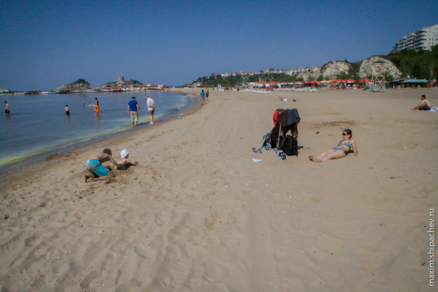
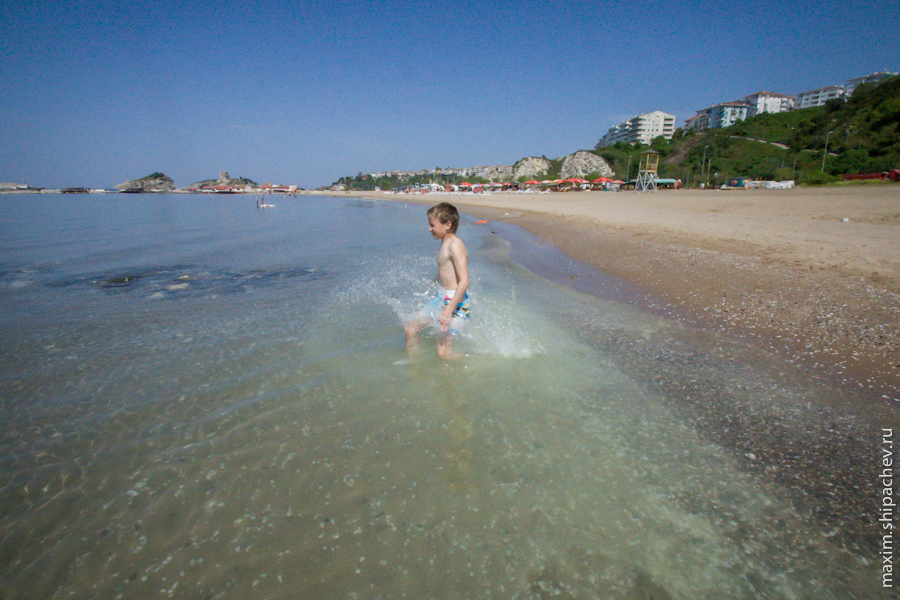
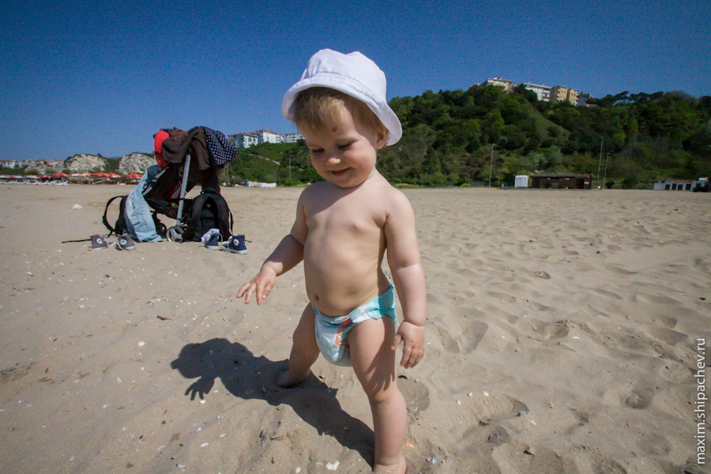
Тусуемся часа полтора на море, пора выдвигаться. Поднимаемся обратно в гору к автостанции. Идти от моря и так морально тяжело, а ведь всегда ещё в гору. Я записал время отправления автобусов заблаговременно, поэтому приходим аккурат к отправлению.
Дальше всё пошло не так, как хотелось.
Мы сели в автобус, автобус выехал из Шиле, пока всё нормально. Но через километр автобус пересёк центральную автостраду и… поехал в какую-то деревню. Сомнения ещё теплились, но через полчаса их не осталось вовсе. Автобус, на который мы сели, отличался от того, на котором мы приехали на пляж. Этот автобус ехал во всем возможным деревням и посёлкам, петляя в горах, останавливаясь у каждого столба. Люди входили и выходили, было свободно, а потом тесно, мужчины ругались с женщинами, кто-то спал, дети кричали, у меня в конце концов болело горло. Но не было абсолютно никакого варианта выбраться из этой ловушки. Мы сели в автобус, который сделает за 4 часовую поездку 81 остановку, до того как довезёт нас до места.
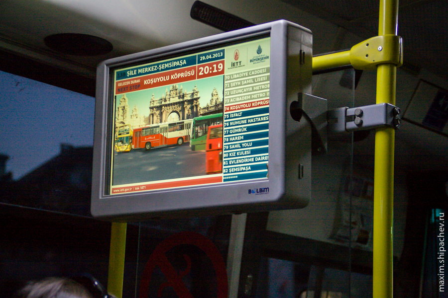
В Стамбул мы приехали уже затемно. Говорят, что настоящей Турции не увидишь, побывав только в Стамбуле. Нам, таким образом, в каком-то смысле повезло.
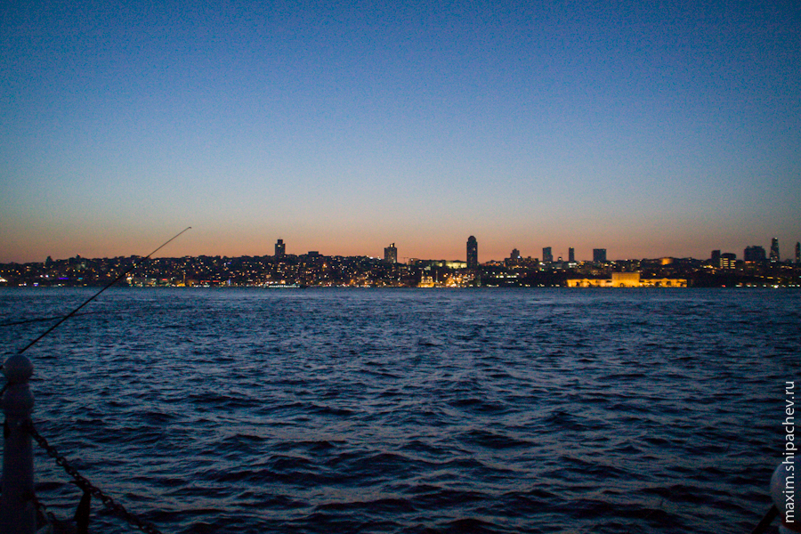
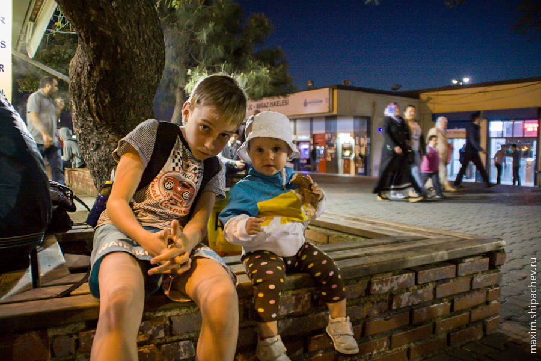
Дети проголодались. Я, в ожидании парома, бегал несколько раз за хот-догами. Продавцы хот-догов были радушны и делали вот так.
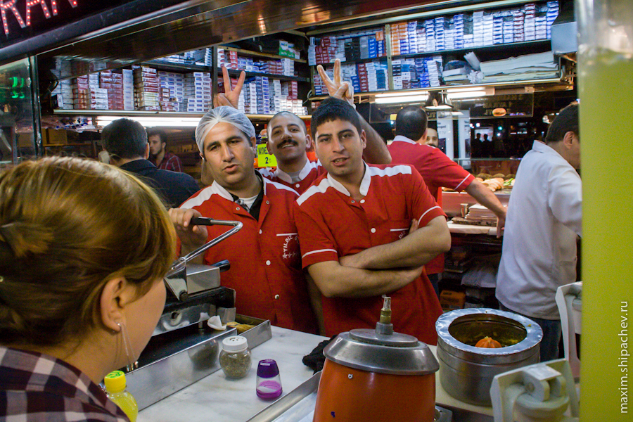